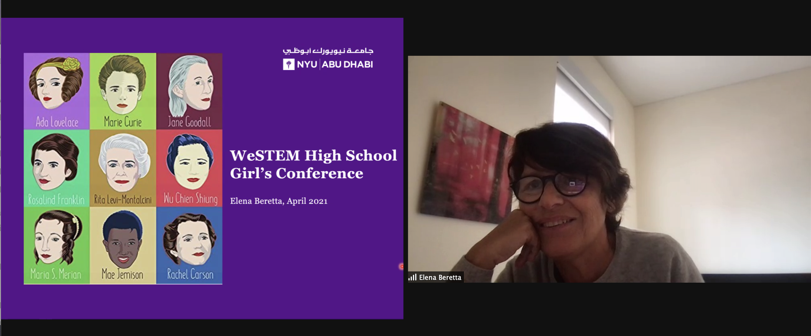

Community Engagement
Picture a Scientist Film Screening : weSTEM organized a virtual screening of the movie ‘Picture a Scientist’ about three accomplished researchers who talk about their journey in science and their experiences with harassment and microaggressions in the workplace.

Group Study : “Productivity Hour” study session was held with virtual breakout rooms of 2-3 people to work on our respective assignments.
Course Advising Sessions : Insights and tips from friends on campus could make our whole semester much easier. All STEM majors were invited to this event to give and get help.
Coffee Chat : Stressed about school? WeSTEM Coffee Chat has always been the best place to vent and make new friends along the way. Our team pairs people from the community to meet over coffee.
Community Spotlight


First Year Programming

Highschool Outreach
Highschool Conference : The goal of the conference is to encourage high school girls in the UAE to pursue college studies and careers in Science, Technology, Engineering, and Mathematics. By interacting with girls with full potential, weSTEM hopes to assist them find their passion in STEM and build confidence as future scientists.

Informative Workshops

Undergraduate Research Panel
Partnering with the Office of Undergraduate Research, weSTEM members learnt about ways to join a research lab, reach out to professors or to lead their own research project and publish a paper in a journal.
Women in the Workplace
Collaboration with NYUAD Career Development Center and Women’s Leadership Network, this panel was discussion-based, moderated by three inspiring women from different industries.

Summer Research Programs
Students who participated in Undergraduate Summer Research Programs shared their experiences.

Grace Hopper Celebration Chat
Grace Hopper Celebration is the largest technical conference for women in Asia. WeSTEM community members who previously attended the program share tips for the scholarship application as well as interview, internship and CV tips.
Careers and Graduate Schools in Psychology and Neuroscience
In a collaboration with the student interest group NeuroAD and the Career Development Center, professors of Psychology and lab assistants gathered to share insights about the vision of psychology and neuroscience.
Engineering Internships
weSTEM collaborated with the Engineering Academic Committee as well as the Career Development Center to seek opportunities students can engage in when applying, and working as an engineering intern.